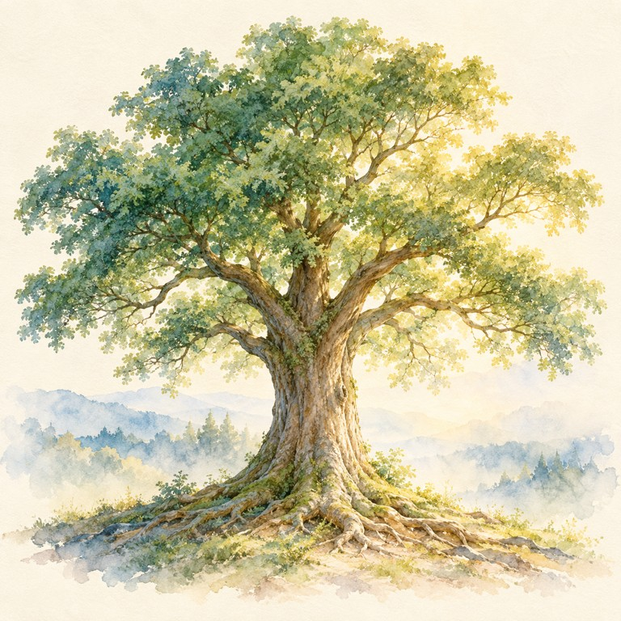
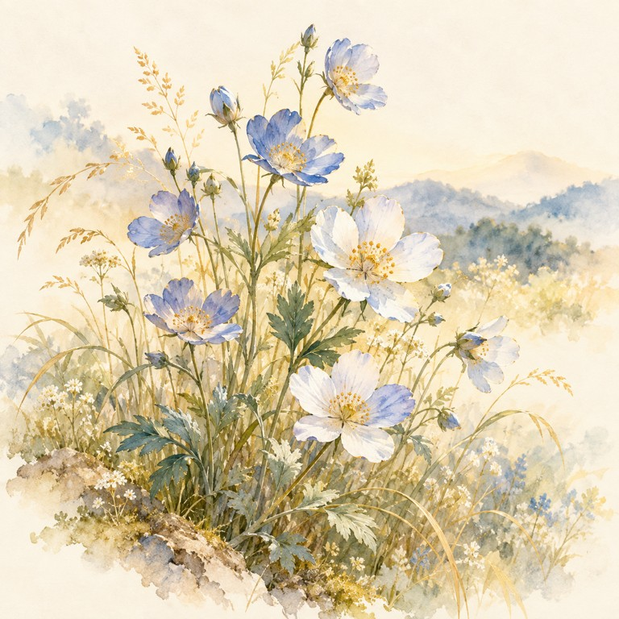
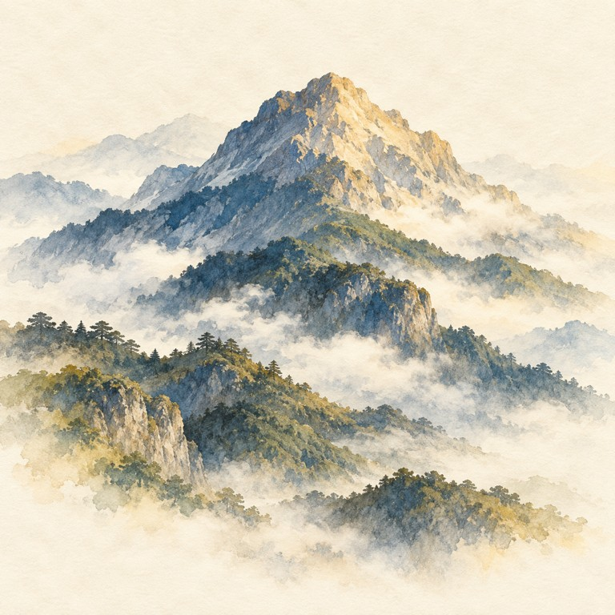
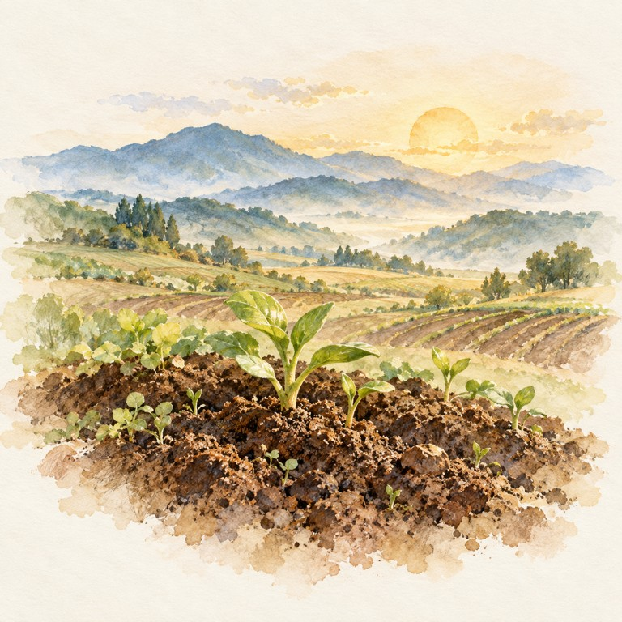
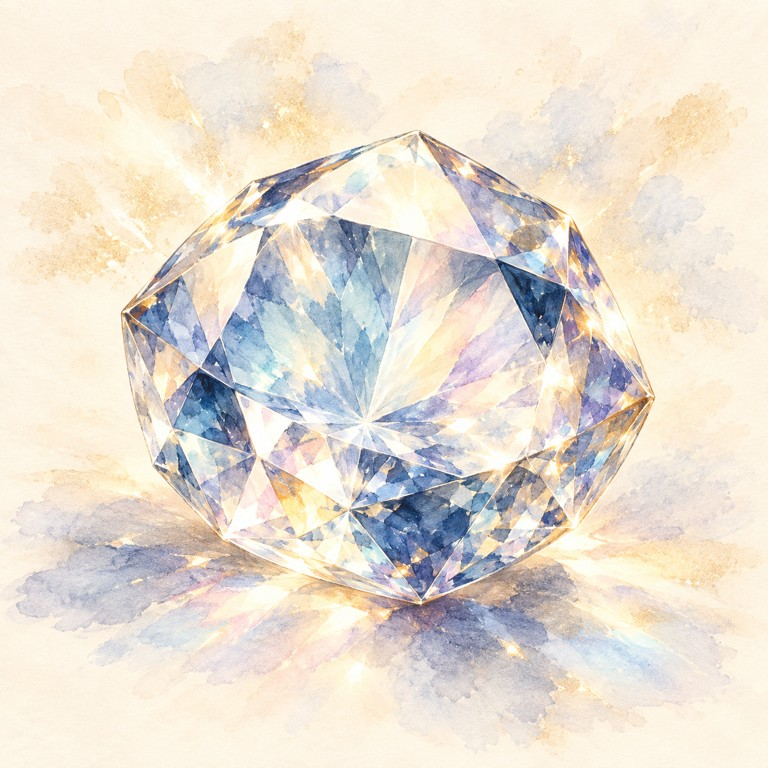
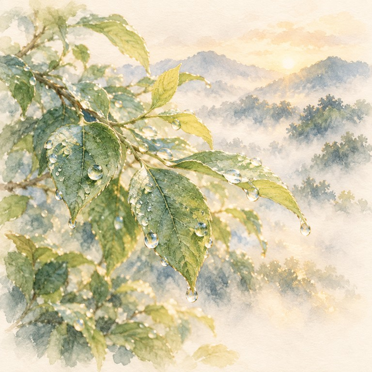

SANMEIGAKU × TAROT · 自分らしく生きるための７つのページ
本来の自分を知る。
自分らしく、世に光を。
大樹、草花、太陽。生まれた日に宿る、本来のあなた。
これから育てていきたい、あなたの使命。
算命学を中心に、タロットの使命を重ねた
７ページの鑑定書で、自己理解を深める。
登録不要 · 端末内で鑑定 · A4・７ページで振り返れます
01 生まれた日から
02 個性と使命を知る
03 自己理解を深める
TEN NATURAL ESSENCES
あなたの中にある、自然の姿。
日干の10種類。それぞれに、違う美しさと育ち方があります。






CREATE YOUR LETTER
生まれた日から、本来の自分へ。
自分を認識し、理解を深める。
自分らしく生きるための、静かな時間。
YOUR PERSONAL LETTER
あなたを知る、７つのページ。
全７ページ。印刷画面で「A4・縦」、倍率100%、ヘッダーとフッターをオフに。PDF保存を選ぶと、７ページの鑑定書として残せます。
LETTERS FROM VISITORS
感じたことを、ことのはに。
鑑定書をひらいて感じたことや、自分について気づいたことを、ペンネームでお寄せください。
SHARED VOICES
届いた感想
まだ感想はありません。最初のことのはをお寄せください。
ABOUT THIS READING
自己理解を深め、
自分らしく、世に貢献する。
日干は、大樹や草花、太陽のような自然の姿にたとえる、本来の個性。使命は、意識して育てたい生き方。算命学では、日干と使命星それぞれの視点から読みます。自己認識から自己理解へ。そして、自分の思いや価値観に気づく自己覚知へ。自分らしく生き、世に貢献しながら、自己探求を続けることを、このサイトのテーマにしています。この鑑定書は、その歩みを支えるために占術の解釈をまとめたものです。科学的な性格判定や、確実な未来を示すものではありません。
この鑑定書について
本来の個性は、日干の10種類を大樹・草花・太陽・灯火・山岳・大地・鋼鉄・宝石・大海・雨露にたとえて読みます。中央星は心の働きや人との関わりの補助として、使命星は育てていく生き方として添えています。
算命学とタロット、名前の響き、カタカムナ48音言霊思念表をもとに解釈を要約し、日常で試せる問いと行動を加えています。日本の暦・日付単位の読みで、境界付近は出生時刻による確認が必要です。
これからも、自己理解と自己探求につながる占いや資料を検討し、鑑定書を育てていきます。
タロットの解説にはLUA『78枚のカードで占う、いちばんていねいなタロット』（日本文芸社）も参照し、絵柄の象徴と４つのスートの視点を要約して取り入れています。誕生日の使命カードに小アルカナの抽選は加えていません。
日干の絵は、このサイトのために制作した水彩画です。タロットの絵柄はPamela Colman Smithによる伝統的なライダー・ウェイト・スミス版。画像提供：Wikimedia Commons（パブリックドメイン）。